第15章：当心分布（Beware the Distribution）
I prefer the judgment of a 55-year old trader to that of a 25-year old mathematician. —— Alan Greenspan
导读：本章要解决的问题
第 9 章讲波动率曲面时，已经把"平值与翼部之间存在隐含波动率差"当作一个观测事实接受下来。本章回过头追问这个事实的成因：取定一个到期，量平值期权与价外"翼部"（wings）的隐含波动率之差，尾部（tails）刻画的是翼部整体的定价水平，隐含偏度（skew）刻画的是分布的不对称程度。Taleb 这一章只做一件事，把"翼部为什么贵""偏度为什么存在"讲清楚，并且讲清它们对动态对冲者意味着什么。
开篇 Taleb 就抛出一条让交易员不安的规则：做市的人多半会拿到"坏"的那一侧分布。市场的焦虑会通过客户的下单方向渗进做市商的头寸，经济学家管这叫逆向选择（adverse selection）。这条规则定下了全章的基调，肥尾和偏度不是抽象的统计现象，它们是交易台每天要承受的方向性压力。
把全章压缩成几条主线：
- 尾部来自波动率的波动（vvol），对应分布的四阶矩（峰度）。波动率自身随机，混合出来的分布在尾部继承高波动率、在峰部继承低波动率，于是又尖又肥。这部分相对容易讲清，也容易用模型演示。
- 偏度来自资产收益与波动率之间的（非线性、有阈值的）关联。它比尾部难处理得多，线性偏度统计量太弱，抓不住真正的依赖结构。
- 直方图会骗人。它只显示终端分布，不显示路径。对动态对冲者来说，偏度的价值更多藏在"通往终值的路径上隐含波动率怎么走"，而非终值本身的概率。这是本章最重要的风险管理规则。
- 有偏资产（biased assets）有结构性成因：非对称会计、价值与价格的正反馈、货币作为投资资产的属性。"上楼梯、下滑梯"描述的就是这类资产。
- 进阶 put-call parity 规则：障碍、二元、彩虹、复合期权各有各的平价（或平价失效）形态，引出美式期权的 omega（期望寿命）和它带来的额外偏度效应。
笔记沿原文 THE TAILS → THE SKEW AND BIASED ASSETS → MORE ADVANCED PUT-CALL PARITY RULES 的顺序展开，在每处把交易员的说法接回它对应的数学结构：vvol 接随机波动率与方差混合、偏度接三阶矩与杠杆效应、Pareto-Levy 接 α 稳定分布、"从期权价格倒推密度"接 Breeden-Litzenberger、Eurodollar 封顶接退化的吸收边界。
一、做市与逆向选择：为什么总是拿到"坏"分布
正式进入尾部和偏度之前，Taleb 先给了一条容易被略过、却定调全章的规则。
期权交易员很可能通过做市拿到"坏"的那一侧分布。市场的焦虑会以某种方式反映进他的头寸里。
这条规则的机制是逆向选择。做市商被动报价、被动成交，而下单的客户并非随机分布。在一个有偏的资产上，恐慌时买保护的需求集中在下行翼部，平静时卖备兑（covered call）的供给集中在上行翼部。做市商日复一日地被这些方向性流动推着，库存就会系统性地偏向"市场担心的那一侧"。后面讲有偏资产的非对称会计时会看到，这种供需失衡本身就是偏度的成因之一。
把它接到理论上，这是一个信息不对称下的均衡结果。报价方对每一笔成交的条件期望为负（成交往往发生在对自己不利的方向），于是必须在买卖价差里收回这部分逆向选择成本。对期权台而言，它的含义更具体：你的隐含波动率头寸会被动地带上客户群的方向性偏好。理解尾部和偏度因此带有直接的实务目的，它让你搞清楚自己每天在被迫持有什么。
二、尾部：随机波动率与肥尾
Taleb 区分了两件难度不同的事：偏度对多数交易员是个含糊的问题，尾部却容易讲清。尾部指的就是用常规 Black-Scholes 公式去量价外期权相对平值期权的隐含波动率高出多少。问题是，价内和价外期权为什么会比 Black-Scholes 给的值贵？
2.1 波动率的波动（vvol）与四阶矩
交易员把这个现象叫"波动率的波动"（volatility of volatility，vvol），它对应分布的四阶矩，即峰度（kurtosis）。还有些相关成因，比如 vega 的凸性。Taleb 顺带记了一段历史：早年交易员根本不信这个现象，把价外期权的高价归因于"彩票效应"（lottery effect），即投资者愿意花小钱博一个大赔付，而大赔付的诱惑蒙蔽了他们对真实价值的判断。但长期看，彩票效应反而站在了投资者这一边，因为他们花那么点钱买到的凸性（convexity）确实划算。这段话本身就是一条交易判断：被嘲笑为"非理性"的价外买盘，事后被证明买到了便宜的凸性。
为了把变量波动率的影响量化，Taleb 用了一个受 Hull-White 模型启发、对 Black-Scholes-Merton 做变量波动率改造的简化模型（详见 Module G）。它的设定值得注意：
假设波动率服从一个和资产本身类似的过程，但没有漂移。这是一个有意简化的方法，目的是评估变量波动率造成的"损害"，而不是真的去给波动率本身建模。Taleb 在这里很坦诚，截至成书时，绝大多数波动率建模技术都没有令人信服的结果，所以读者该从这个练习里带走的是一组规则，而不是一个建模框架。
2.2 表 15.1：波动率的波动如何抬起翼部
表 15.1 展示一个 90 天平值期权（按 15.7% 波动率定价）在三种情形下的价格。Case 1 取 vvol = 0.25，意思是波动率平均每天随机变动约 0.16（即在 15.7 与 15.86 之间），变动方式和资产本身一样；Case 2 取 vvol = 0.5，波动率变动幅度翻倍；Case 3 即 vvol = 0，回到常规 Black-Scholes 情形，波动率恒为 15.7%。
| Strike | Case1 vvol .25 | Case2 vvol .5 | Case3 vvol 0 | Delta (BSM) | Impl 1 | Impl 2 | Impl 3 |
|---|---|---|---|---|---|---|---|
| 86 | 0.13 | 0.26 | 0.08 | 0.03 | 17.3 | 20.1 | 15.0 |
| 90 | 0.37 | 0.53 | 0.31 | 0.09 | 16.6 | 18.4 | 15.7 |
| 95 | 1.21 | 1.31 | 1.19 | 0.27 | 16.0 | 16.6 | 15.7 |
| 100 | 3.13 | 3.13 | 3.13 | 0.52 | 15.8 | 15.8 | 15.7 |
| 105 | 1.34 | 1.43 | 1.33 | 0.75 | 16.0 | 16.5 | 15.7 |
| 110 | 0.52 | 0.69 | 0.46 | 0.90 | 16.5 | 18.0 | 15.7 |
| 115 | 0.19 | 0.36 | 0.13 | 0.97 | 17.1 | 19.7 | 15.7 |
| 120 | 0.07 | 0.20 | 0.03 | 0.99 | 17.8 | 21.3 | 15.7 |
（上表摘取了原表 15.1 的代表性行，完整表覆盖 86 到 120 全部行权价。）
读这张表有几个要点。平值期权（strike 100）在三种情形下价格几乎完全相同（都是 3.13），说明平值期权对波动率的波动不敏感。价外期权（无论高行权价的 call 一侧还是低行权价的 put 一侧）获益最大，vvol 越大、价格抬得越高。最后三列是按从业者惯例从价格反算出的 Black-Scholes 隐含波动率，交易员由此可以确认：vvol = 0 那一列的隐含波动率确实恒等于 15.7%，是平的；而 vvol > 0 的两列则在两翼翘起，形成微笑。
为什么平值不受影响、价外获益最大？Taleb 给的解释是凸性的方向。期权价格关于波动率的二阶导数（vega 的凸性，即 volga）在价外为正、在平值附近近乎为零甚至轻微为负。哪里对波动率是凸的（即远离平值），哪里就因为 Jensen 不等式而在波动率随机化后获得正的价值增量；平值期权由于其极微小的凹性（一个 call 的价值被资产价格本身封顶）反而会无法察觉地损失一点点波动率价值。
无套利下，期权价值关于波动率的随机化收益由 volga 决定。若 随机且与价格独立，则
当 （价外，volga 为正）时，混合抬高期权价值；平值附近 volga≈0，价值几乎不变。
这正是"vvol 抬翼、不抬平值"的数学根：它是 Jensen 不等式作用在 volga 上的结果。表 15.1 的数值形态与这条命题完全吻合。
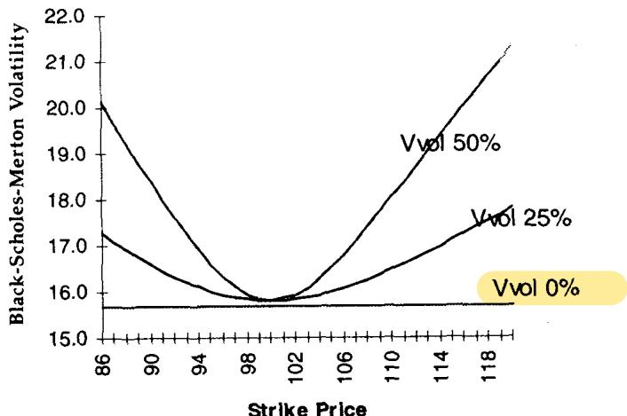
图 15.1 把表 15.1 画成曲线：横轴行权价、纵轴隐含波动率，vvol 越大微笑越深。它给出的是与 vvol 成比例的肥尾。由于 vvol 既不可知也几乎无法估计，Taleb 再次强调，读者该带走的是规则而非建模框架。
2.3 引入价-波相关性：微笑会倾斜成偏斜
如果在模型里进一步引入资产价格（或其变动）与波动率（或其变动）之间的相关性，结果会显著变化：微笑会向左或向右倾斜。Taleb 描述了它的特征。
微笑的凸形状不变，但会绕着平值"转动"（pivot），以容纳上下行之间的不对称。（资产变动）与 （波动率变动）之间的负相关，会使上行期权价格比下行行权价便宜，这就能解释偏斜（skew）；正相关则导致正偏斜。
这把第 9 章波动率曲面上"偏斜"的来源讲清了：尾部（两翼一起翘）来自 vvol，偏斜（两翼一高一低）来自价-波相关。前者是对称效应，后者是不对称效应，二者叠加成实际观察到的偏斜微笑。
但 Taleb 马上发出警告，要刻画偏斜环境里的资产行为，上面的练习必须做相应修改，原因有二，这两点都指向"线性相关不够用"：
第一，资产收益与波动率可能相关，但是非线性的。典型情况是相关性对小幅波动成立、对大幅波动可能反转。SP500 期货就是清楚的例子：小涨之后波动率下降，大涨之后波动率反而上升。
第二，研究过数据的交易员清楚，波动率（更准确说是"关联"而非"相关"）挂钩的是资产价格的"区间"（range），而不是资产价格本身或其变动。它的行为带有明显的"阈值"（thresholds）特征也就不奇怪了。如果市场下跌发生在一个已知区间之内，尤其是在一轮上涨之后，这种下跌并不会推高波动率。这种关系很难建模，尽管有种种 ARCH 式的尝试。
这两点合起来是对"用一个常数相关系数刻画杠杆效应"的否定。真实的价-波依赖是状态依赖、阈值触发、区间关联的，线性框架只是粗糙的一阶近似。
2.4 为什么变量波动率会造成肥尾：条件似然解释
一个常见问题是，变量波动率为什么会导致肥尾？Taleb 给了一个条件似然的解释，它非常直观。
首要解释是"给定波动率状态下资产价格的似然"。假设波动率随机、资产价格也随机。那么不难理解：条件于"身处尾部"，最可能的状态是高波动率，因为高波动率比低波动率更容易把市场带到尾部，于是尾部会带上高波动率的厚度。反过来，低波动率更可能把市场留在中间的"峰"上，所以当市场处在中间（即价格没有实质变化）时，分布更可能呈现低波动率的形状。
这个概念用图来理解更容易。
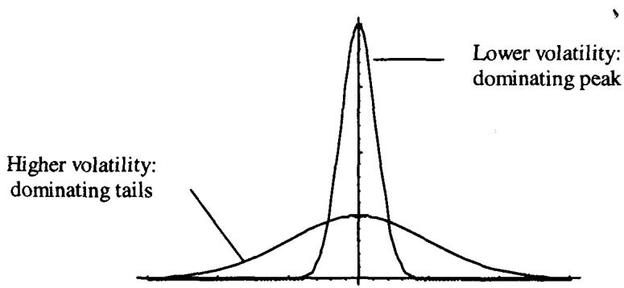
图 15.2 画了两个分布，其中一个的波动率是另一个的四倍。高波动率分布的尾部更肥，低波动率分布的峰更高。于是可以想见，把两个分布混合时，高波动率主导尾部，低波动率主导身体。
这就是肥尾（峰高尾肥）的生成机制。把它写成方差混合：
其中 是波动率为 的正态密度， 是波动率的混合分布。即便每个分量都是正态，混合后的 也会有正的超额峰度。这与 2.2 节的 Jensen/volga 解释是同一现象的两种语言：方差混合产生肥尾，肥尾意味着价外期权该贵，于是 volga 为正的价外期权在波动率随机化下增值。条件似然论证则给了它一个贝叶斯式的直觉，"既然到了尾部，多半是高波动率干的"。
2.5 市场的直方图：高峰综合征
直方图显示某段时间区间内某个收益幅度（更常见是价格变动的对数）的相对频率。通常显示日变动。把变动分桶、数每个桶里出现的占比（或总次数），就得到频率。
Taleb 给出四个资产的实际分布：日元、SP500、30 年美国国债收益率、Euromark 期货，前三个覆盖 10 年、最后一个覆盖 3 年。它们都把收益（价格对数差）的频率直方图与同样总体波动率的正态分布叠在一起。所有图都显示出高峰综合征（high peak syndrome）。
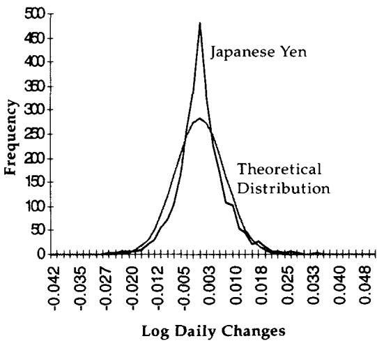
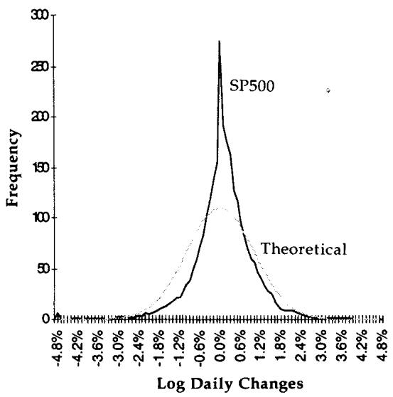
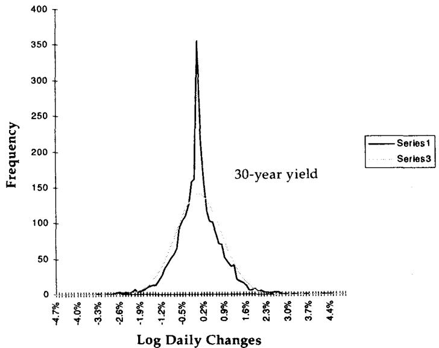
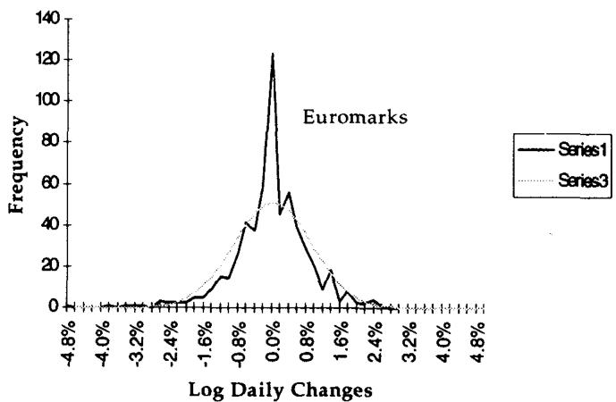
精明的读者也许会观察到，这些图更像"高峰"而非"肥尾"。事实上，押注肥尾的交易员通常押的是峰：他们想在"什么都没发生"时赚点钱，而不是在极端行情中赚钱。这句话点破了肥尾交易的真实形态。肥尾分布峰高尾肥、腰部塌陷，做空肥尾（卖跨式）的人收的是腰部的权利金，赌的是市场停在峰里不动。理论上峰和尾是同一枚硬币的两面（峰高必然尾肥，因为概率守恒挤出了腰部），所以"押峰"和"押尾"在统计上是一回事，只是交易员从盈亏体验上更愿意说自己在"押市场不动"。
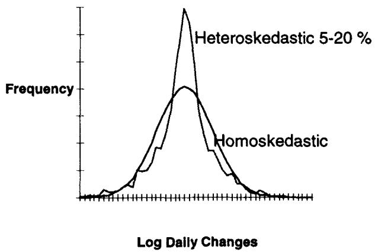
Taleb 用一个自制的例子收尾。某个"高峰"的夏日，他构造了一个分布：市场有三个 regime，各带不同波动率，s1 波动率 15%（正常市况）、s2 波动率 5%（假日慵懒）、s3 波动率 20%（焦虑），三者等概率。蒙特卡洛在它们之间采样，produced 出图 15.7 的直方图。这正是 2.4 节方差混合的一个离散实现：三个等概率的正态分量混出又尖又肥的形状，用最少的假设复现了市场直方图的高峰综合征。
三、偏度与有偏资产
3.1 偏度的定义：收益与其波动的相关
偏度（skew）是分布的不对称性。取一个日变动 ，记 为它的非中心化波动率（按第 6 章的解释，假设平均收益为 0）。（非中心化）偏度为：
当 与 正相关时它为正，负相关时为负。Taleb 给出的直觉很关键：偏度表达的是随机变量的"移动" 与它的"波动" 之间的相关性。
这句直觉是理解全章偏度的钥匙。把三阶矩拆成 ，它度量的就是"涨跌方向"和"波动幅度"是否同向。负偏度意味着大跌伴随高波动（ 时 大），正偏度意味着大涨伴随高波动。这与 2.3 节的价-波相关性是同一件事的两种写法： 与 的负相关，在收益分布上就表现为负偏度，在期权市场上就表现为下行翼部贵于上行翼部。这也是量化金融里"杠杆效应"（leverage effect）的统计指纹。
3.2 Option Wizard：Pareto-Levy 稳定分布的图形表示
很多交易员听说过 Pareto-Levy 稳定分布族。这是一大类被称为"稳定"（stable）的分布，稳定是指它们可以被平移。Taleb 说交易员只需知道一点：钟形分布只是这个庞大而不幸的家族里的一个特例。
Pareto-Levy 分布的特征函数为：
其中 是虚数单位 。当 时，它退化为正态分布的傅里叶变换（同时 ），即 。
这个函数在 时没有二阶矩（即没有方差），在 时没有一阶矩（即没有均值）。这意味着它有无限方差，对任何身处市场的人来说都是吓人的含义。从物理上看，左右尾永远不靠近原点，再没有紧支撑（compact support）。
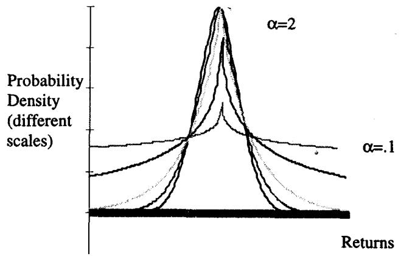
如图所示，由特征函数反变换得到的密度函数有这样的形态：当 从 2 向 0 下降，尾部变厚，密度向零概率收敛得越来越慢。 越小，需要越宽的图才能画下这个分布。这就是无限波动率的图形含义：不可能把图塞进一个视觉框架里。更吓人的是，当分布没有均值时，看不到峰，曲线一路向上顶到天花板而永不相交。
许多混沌理论家抱怨过 Pareto-Levy 分布族在通俗的"唱衰市场"文献里被滥用。Taleb 的态度务实：对交易员来说，把肥尾想成变动波动率的结果，比想成某种炸裂的方差更容易。事实上，Pareto-Levy 正是"在很小的波动率上叠加极高的波动率的波动"的产物。
这句收束把 Pareto-Levy 接回了本章的主线。 稳定分布（无限方差）可以看作方差混合分布在 vvol 趋于极端时的极限：当混合波动率 自身的尾部足够厚，混合出来的 的尾部就退化到幂律、二阶矩发散。所以 Taleb 不需要引入"无限方差"这种交易上无法操作的概念，他用"低波动率 + 极高 vvol"这套可以在二叉树上模拟的语言，覆盖了从正态到 Pareto-Levy 的整个谱。这是工程务实压过数学优雅的典型选择。
3.3 偏度难以翻译成偏斜曲面：路径才是关键
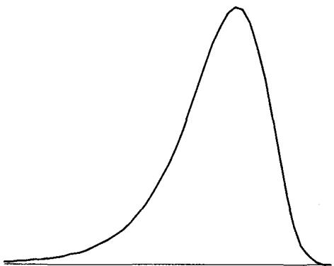
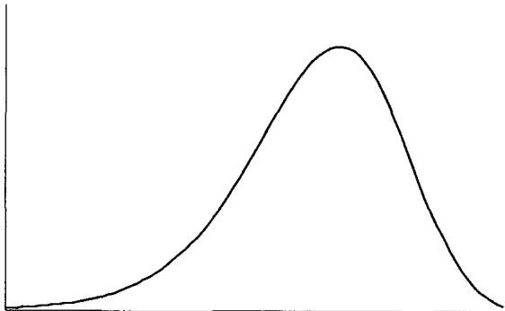
图 15.8 和 15.9 展示了两种不同程度的偏斜。Taleb 指出，偏度并不容易翻译成偏斜的波动率曲面。前面给出的线性偏度测度，作为统计量太弱，不足以恰当解释波动率与资产价格之间的真实依赖。存在很多情形：动态对冲者持有昂贵的 put、做空便宜的 call 会赚钱，尽管直方图看上去近乎对称。
为什么会这样？因为直方图不显示路径（path）。Taleb 举了 Syldavia 货币的例子：假设它初始时对称地上下波动 1%。但在下跌时，连续三天波动率上升。这种波动率的上升很可能把它进一步推低，但同样可能把它带回原点。直方图看上去会近乎平衡，实际上会显示左尾略微鼓起，但不严重到能被检测出来。直方图能很好显示的，是"市场只会下跌 4 美元（20% 概率）、上涨 1 美元（80% 概率）"这类经典情景；它不能很好显示资产价格与波动率之间的相关，只能显示资产变动与波动率变动之间的相关。
直方图不能恰当地显示价格水平与市场波动率之间的依赖关系。
这种依赖如何翻译成行权价间隐含波动率的分布，是不确定的。惯常做法是看最终直方图、导出一个概率分布，再拿它和期权价格隐含的分布去比。交易员可以通过对期权价格关于行权价求二阶导数来生成密度（见 Breeden 与 Litzenberger，1978）。但作为交易员，Taleb 对这种技术极为怀疑，因为它忽略了波动率变化带来的路径依赖。正如第 3 章"更大的傻瓜理论"所讲，隐含波动率的行为是期权交易的决定性因素。所以价外 put 成为绝佳资产，不只是因为市场可能剧烈下跌，更主要是因为市场在较低水平上的行为可能让持有者获益。由此得出：
对动态对冲者而言，偏度的价值更多在于通往终值的路径上隐含波动率的行为，而非资产最终落在该终值上的概率。
这是全章对动态对冲者最重要的一条。把它接回理论，要害是 Breeden-Litzenberger 公式的适用边界。该公式
从一组同到期的期权价格倒推出风险中性终端密度 。它在数学上严格，但它只给出终端（ 时刻）的风险中性密度，对路径一无所知。而动态对冲者的盈亏是沿路径累积的：他每天 rebalance、每天与隐含波动率打交道，他的损益由 这类沿途的项决定，而非仅由 落在哪里决定。所以即便两个市场的终端密度（直方图）几乎相同，只要"下跌时隐含波动率怎么走"不同，动态对冲者持有 put 的体验就截然不同。Taleb 的怀疑正落在这个缝隙上：终端密度是可观测、可倒推的，路径行为却不是，而后者才是动态对冲者真正交易的东西。
3.4 有偏资产：上楼梯，下滑梯
老交易员的格言"Up the escalator, down the chute"（上楼梯、下滑梯）描述了一大类资产的行为。
有偏资产（biased assets）是分布不对称的资产，特征是抛售时波动率上升，上涨时波动率（在较小程度上）下降。
它们的市场结构使得抛售引发焦虑、上涨引发欣快。焦虑会在下跌途中造成剧烈波动，欣快通常带来上涨途中的有序市场。容易想到的例子是墨西哥比索。表 15.2 给出一个简化的两极世界，列出有偏资产的两种极端 regime，中间自然有各种过渡状态和过渡期。
| 特征 | Type 1 Regime | Type 2 Regime |
|---|---|---|
| 市场状况 | 长时间上涨（或平静期）后的剧烈断裂 | 通过高 carry 或正 trend 提供高回报的正常状况 |
| 历史波动率 | 上升 | 普遍偏低 |
| 隐含波动率 | 显著上升，常超调历史波动率 | 低，普遍接近历史。价外 call 常低于近期历史 |
| 偏度 | 偏度更平，但波动率更高 | 低波动率下高偏度，常来自 call 卖盘。波动率越低，偏度越高 |
| 序列相关 | 常为负自相关，"鞭打式"市场 | 正自相关，缓慢的"安静趋势" |
| 与其他资产的相关 | 相关性全面崩溃。低相关上升，高相关下降 | 与同类资产中等、稳定的相关 |
这张表是有偏资产的"两态相图"。Type 2 是平静的上涨态（低波动、高偏度、正自相关、相关稳定），Type 1 是恐慌的断裂态（高波动、偏度变平、负自相关、相关崩溃）。值得注意的是偏度在两态间的反向行为：平静态下偏度反而高（因为持续的 call 卖盘压低上行翼部、波动率越低偏度越高），恐慌态下偏度反而平（因为整体波动率被抬起、两翼一起贵，不对称被淹没）。这解释了一个反直觉的观察：偏度最陡的时候往往是市场最平静的时候，而非最恐慌的时候。
Type 1 里"相关性全面崩溃"是危机传染的标准特征：平时低相关的资产在抛售中一起跌（低相关上升），平时高相关的对冲组合失效（高相关下降），这正是分散化在最需要它的时候失灵的统计描述。
有偏资产有许多成因，下面几节分别讲。
3.5 非平行会计：有所有者却无人做空
现代金融的奇迹之一是，有些资产有所有者，却没有人有意识地做空它。换句话说，受规则约束、要盯市的所有者，和没有任何盯市的"卖方"之间，存在会计上的不对称。
意大利政府发行的债券，被所有者盯市，价格上涨（收益率下降）时所有者表现出喜悦。吊诡的是，意大利政府同样会因价格上涨而喜悦，因为它未来的融资成本更低了。所有者的财富在这个过程中增加了，而意大利共和国的财富并没有减少。假如意大利政府有一张损益表，显示它在 100 发债、现在交易在 105、若回购自己的发行将损失几万亿里拉，那情况就完全不同了。
股票由公司发行。在股价上涨的一天结束时，国家的财富随市值跳升而增加，财富凭空被创造。但发行股票的公司不必为这"以它为代价创造的价值"而懊恼：所有者可以发更多股、管理层的股票期权改善了、员工的退休计划更富了，等等。这是一个奇迹，除少数例外，世界上几乎每个人都从上涨中获益。不开心的少数派由两类人构成：其一，不持有股票、看着邻居开走新车的人（他们可被视为真正的空头），但他们极少成为多数；其二，无备兑的空头、商品交易员、盼着下一次崩盘大赚一笔的对冲基金。
把这一节接回偏度的成因：非平行会计制造了天然的供需不对称。多头方人人盯市、人人在上涨中受益、无人有动力在高位系统性做空；而下跌时，受规则约束的多头（基金、银行）被迫减仓、买保护，抛压与买 put 的需求集中在下行。供需的这种结构性偏斜，正是负偏度（下行翼部贵）的微观成因之一。它呼应了开篇的逆向选择规则：做市商被动承接的，正是这套不对称流动。
3.6 价值与价格挂钩：正反馈与恶性循环
股价上涨往往给公司带来稳定，因为它现在能更容易地融资。当一家公司的市值上升，债务权益比从会计和经济两个角度都改善。从会计角度，公司可以筹现金、偿还债务，从而做大资产负债表的左侧；从经济角度，总市值上升，这种上升能带来更好的信用评级，确保更宽、更便宜的借款能力。同样，价格下跌使公司更具风险，因而更波动。政府亦然：当一个新兴国家资产价格更高时，政府可以轻松通过发债履行债务义务；但当资产价格被打趴，政府可能越来越难借到钱，从而加速一个恶性循环、制造更多不确定性。
这一节给了有偏资产一个反馈机制的解释，它比 3.5 节的会计解释更"动力学"。价格上涨降低风险、降低波动率（上楼梯，有序）；价格下跌抬高风险、抬高波动率（下滑梯，恐慌）。这是一个正反馈：价格与波动率反向耦合，且耦合本身随价格水平变化。把它写成 2.3 节那种价-波相关，就是一个状态依赖的负相关，且在下行端被放大。这正是 SP500、新兴市场货币、信用债共有的"杠杆效应"的基本面来源，也解释了为什么这类资产的负偏度是结构性的、而非偶然的。
3.7 货币作为资产：平行货币对 vs 投资货币对
资深期权交易员能轻易看出一个货币对是否有偏。通常，"平行"（parallel）货币对在抛售和上涨之间表现对称，它们是那些交易主要由商品贸易流驱动的货币对。另一方面，彼此之间充当投资资产的货币，会表现出非对称行为。德国马克对意大利里拉、西班牙比塞塔、希腊德拉克马，就属于后者。
Taleb 给了两条可记的规则：
第一，充当资产的货币，通常在其价格和利率之间呈现强相关。利率被上调，要么是为了"捍卫"货币，要么是因为抛售中的资本外逃。
第二，作为贸易载体的货币，其价格与利率之间相互独立。
这两条把"货币对是否有偏"接到了一个可观测的判据上：看价格与利率是否耦合。投资货币对的价-率耦合（抛售→加息防御→进一步抛售）本身就是一个正反馈，与 3.6 节公司股价-融资的反馈同构，因此投资货币对天然有偏、天然带负偏度。贸易货币对的价率独立则意味着没有这种反馈，分布相对对称。这给了交易员一个不靠历史数据、只靠市场结构就能预判偏度的方法。
3.8 反向资产：危机的避风港
有些资产，如黄金，以及程度较轻的瑞士法郎、德国马克和日元，会表现出其他资产的镜像，常常表现得恰好与常规资产相反。它们成为从常规投资货币和股票撤出的资本外逃的接收方。
这一节补全了相关性图景。如果有偏资产在抛售时负偏（下行波动放大），那么反向资产（避险货币、黄金）就在同样的抛售中正偏（上行波动放大），因为危机资本涌入它们。对组合而言，这意味着 risk-on 资产与 risk-off 资产之间存在状态依赖的负相关，且这种负相关在危机中增强。这呼应了表 15.2 里 Type 1 regime 的"相关性全面崩溃"，从另一侧看就是避险资产与风险资产的负相关在恐慌中骤然加强。
3.9 波动率 regime 与条件偏度
短时间的高波动率、随后长时间的低波动率，会产生一个"肥尾"的分布直方图。Poisson 到达时间的许多应用都给出了与实际直方图一致的结果，比如跳跃扩散（jump diffusion）过程。
通常，直方图还会显示偏斜：分布不对称，左尾肥、右尾瘦。但如前所述，直方图掩盖了事件的次序。条件偏度（条件于前一个 regime 是 Type 2）非常高。一旦把 Type 1 与 Type 2 regime 分离开来，这些事实在直方图里就能很好地显现。
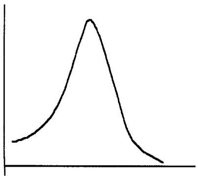
图 15.10 显示 Type 1 regime，包含确保进入 Type 2 市场的第一波下跌。对于"Type 1 regime 加过渡"，应当设置一个交易策略，从下面这个 2×2 的情景表里获益：
| Rally（上涨） | Sell-Off（抛售） | |
|---|---|---|
| Slow（慢） | Likely（可能） | Unlikely（不可能） |
| Fast（快） | Unlikely（不可能） | Likely（可能） |
这张表把"上楼梯、下滑梯"量化成了速度-方向的联合分布：慢涨可能、快涨不可能、慢跌不可能、快跌可能。它正是负偏度的微观结构表述，上行受限于慢速（有序），下行集中于快速（恐慌）。
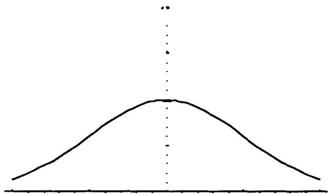
图 15.11 显示崩盘之后的 Type 2 regime。把 15.10 和 15.11 对照看，就理解了 Taleb 为什么强调条件偏度：无条件直方图把两个 regime 混在一起，偏度被稀释；一旦条件于"刚从 Type 2 转入"，第一波下跌带来的负偏度才显出真实的陡度。这与 3.3 节"直方图不显示路径"是同一论点的 regime 版本，次序（先 Type 2 后 Type 1）携带的信息被无条件统计抹掉了。
3.10 利率与 carry 的相关
有偏资产的主要特征，是利率与 carry 之间的强相关。这一点在第 8 章（专讲 gamma 与 shadow gamma 的那一章）有更多解释。
Taleb 在这里只点到为止，把它交还给 shadow gamma 的框架。其含义是：对有偏资产，利率（融资成本/carry）和波动率状态是耦合的，所以对冲它的 gamma 时不能把 carry 当成常数，必须考虑 carry 随市场状态漂移带来的二阶效应，这正是 shadow gamma 要处理的"参数随标的联动"的问题。
四、进阶 put-call parity 规则
本章最后一节从分布转向平价关系，看各类期权的 put-call parity 如何成立、如何失效，并由此引出美式期权的 omega 和它带来的额外偏度效应。
4.1 香草期权：把内在价值剥掉，只比 moneyness
对欧式和软美式期权，delta 中性的 call 复制了 delta 中性的 put 的风险轮廓。正因如此，一个价内 call 的波动率必须恰好等于与之相对的价外 put 的波动率。所以当交易员说一笔交易是"收权利金"（for a credit）还是"付权利金"（for a debit）时，他会把每一部分内在价值（按现值调整后）从总成本里剥掉来审视这笔交易。
于是价内与价外之间的对立就不存在了（除了 delta 的差异），因为两者有等同的时间价值，且各自能用一个确定性工具合成复制对方。差别落在"moniness"（在值程度）的层面，即行权价与资产价格之间的距离。据此，分析会按期权的"上行 moniness"（行权价高出当前资产价格多少）和"下行 moniness"（行权价低于当前资产价格多少）来考虑。
这一节把第 9 章的偏斜分析重新锚定。put-call parity 保证同行权价的 call 与 put 共享同一隐含波动率，所以偏斜曲面是一条关于"距离平值多远"的曲线，而不必区分用 call 还是 put 来表达。理论上这就是
剥掉右侧确定性的远期内在价值后，call 与 put 的时间价值（即波动率敏感的部分）完全相同。这让交易员可以只用一侧的隐含波动率描述整条偏斜，是后面所有平价讨论的基准。
4.2 障碍期权的平价
做空一个常规敲出、做多香草，复制一个做多的敲入，两者同行权价、同出局价（outstrike）：
例如，一个 102 行权价、98 出局价的 KO call，可以通过买入 102 call 在 98 敲入、卖出香草 102 call 来复制。在障碍处，两个期权都会"square"（敞口归零、相互抵消）。这同样适用于反向敲出期权（reverse knock-out）。
这条恒等式就是障碍期权的"in-out parity"：同行权价、同障碍的敲入加敲出等于一个香草，，移项即得上式。它成立的前提是不计 rebate、且两者共享同一障碍监控。在障碍处两者 square，是因为触障瞬间敲出归零、敲入激活成香草，组合的总敞口连续过渡。
4.3 美式二元期权：用带 rebate 的 KO 合成
美式二元期权可以用带 rebate（对应赌注大小）的 KO 来合成。具体说，一个在 104 的二元"call"赌注（一触即付），赔付 2 美元，等价于一个行权价和出局价都在 104 的 104 敲出 call（这个 call 永远不会在值），外加 2 美元的 rebate。这个 rebate 可以解释为一个美式二元，附带支付日时间价值带来的一些可能的复杂性。
这里的构造很精巧：把行权价和障碍都设在 104，意味着这个 call 在被敲出的同一瞬间才刚好平值，永远没有内在价值，它纯粹是一个"触障开关"。于是它的全部价值就浓缩在触障时支付的 rebate 上，而"触障即付固定金额"正是美式二元（one-touch）的定义。Taleb 提醒的"支付日时间价值复杂性"，指的是 rebate 究竟在触障时立即支付还是到期支付，这会差一个贴现因子。
4.4 欧式二元期权：可逆性规则
欧式二元产品有和常规期权相同的 put-call parity 规则，但带一个转折：一个做多的 call 是一个做空的 put 的镜像，连 vega 都是，这不同于常规期权"long call + delta = long put + deltas"的规则。这被称为可逆性规则（reversibility rule），可以这样构造。
在极限上，一个二元就是一个价差（spread）。先用两个理论行权价 96 和 94 建立价差的等价关系：
做多 96 P、做空 94 P、并做多净 .13 个 delta，将复制做空 94 C、做多 96 C、但做多 .13 个 delta，这令人意外。和简单期权不同，价差的复制是通过同一侧、同等幅度的 delta 完成的。
由此推广，一个做多二元 95 put、做多 .13 个 delta（在远期上），等价于一个做空二元 95 call、做多 .13 个 delta。
可逆性规则是欧式二元最反直觉的地方，值得把它和常规期权对照清楚。常规期权里，long call 与 long put 的 delta 方向相反（一正一负），通过 与远期挂钩。但二元期权的支付是阶跃函数，long binary call（赌 ）与 short binary put（赌不是 ，即 ）押的是同一个事件，所以它们连 vega 都同号。把二元看成行权价价差的极限（ 窄 put spread）就能看清：价差的复制用的是同侧同幅的 delta，因为价差本身就是对"密度在某点的值"的押注，而非对"方向"的押注。这也是 Breeden-Litzenberger 的对偶面，二元价格 ≈ 累积分布、价差 ≈ 密度。
4.5 彩虹期权：平价部分失效
彩虹期权（rainbow options，双行权价或多行权价）的 put-call parity 规则不完全成立。例如，一个写在 IBM 或微软上的 put，不能用一个写在 IBM 或微软上的 call 加标的资产来复制。交易员只是庆幸金融市场没有太多这种东西。多数交易员讨厌这类工具，因为它们具有欺骗性。
平价失效的根源是多资产期权的支付依赖于"哪个资产触发"，这是一个非线性的、依赖相关性的选择算子。 这类支付无法分解成单资产 call/put 加标的的线性组合，因为它的 delta 在两个资产之间切换、且依赖相关性。这就是 Taleb 说的"欺骗性"，它看起来像期权组合，却不能用期权组合静态复制，必须动态对冲相关性敞口。
4.6 复合期权：平价在二阶成立
复合期权（compound options）的 put-call parity 规则在第二个期权阶上成立。一个做多的（欧式）call-on-call，可以用做多的 put-on-call 加做多该 call 来复制，三者同行权价、同出局价。一个做空的 put-on-put，可以用做空同一期权上的 call、并做空该期权来复制，依此类推。即便是三阶期权，比如一个写在复合期权上的 call，也可以用同阶的 put 加低一阶的期权来对冲。
复合期权的平价是把香草平价递归地用到"以期权为标的"的层级上。把底层期权 当作一个新的标的资产，那么写在它上面的 call-on-call 和 put-on-call 就满足
形式与 4.1 节完全一致，只是标的从 换成了 。这种递归可以一直叠上去，所以 阶期权的平价用 阶的对侧期权加 阶的标的来实现。
4.7 美式平价失效与 omega：期望寿命引出的额外偏度
美式期权的 put-call parity 规则失效，由此引出 omega 的概念，即期权的期望寿命（区别于名义久期）。因此最好把美式期权看成需要在一个比名义欧式更短的波动率期限结构上定价。在任何时刻，一个行权价上的期权会接近欧式（期望寿命更长的那个价外期权），而对侧的期权会按美式定价。
在更进阶的层面，需要考察偏斜效应。put-call parity 被悬置后，深度价内期权会服从提前行权规则，这除了期限结构效应之外，还会翻译成一个不同的偏斜。
这一节把全章的两条主线，期限结构和偏度，在美式期权上汇合。omega（期望寿命）比名义到期短，是因为提前行权停时 ，所以美式期权该用更短端的波动率定价。关键的不对称在于：一对同行权价的美式 call 和 put 不会同时被提前行权，价外的一侧（期望寿命长）行为像欧式，价内的一侧（更可能被提前行权）行为像真正的美式、寿命短。于是同一行权价上 call 与 put 的有效定价期限不同，4.1 节那条"call 与 put 共享同一波动率"的香草规则被打破，由此产生一个纯粹源于提前行权的额外偏斜，叠加在 vvol 尾部和价-波相关偏度之上。
4.8 Option Wizard：一个棘手的问题（Eurodollar 封顶）
Taleb 用一段轶事收束本章。某著名机构有位平庸的掉期主管，喜欢用下面的问题恐吓来面试的、吓得发抖的 MBA：
"Eurodollar 被封顶在 100.00，不可能再涨。当市场到 100.00 时，100 行权价的 call 值多少？"
"零，"应试者会（骄傲地）回答。
"对，好答案。那 put 呢？"
"……"（沉默，长久的沉默）。
"那么，"掉期交易员会宣布，"你没通过我的测试，put 也应该值零。你难道不懂 put-call parity 吗？也许你该去制造业、或者某家公司的会计部门找份工作。"
有一天，这位掉期交易员遇到了对手，是作者的一位朋友、一个资深的量化交易员（相当罕见的物种）。掉期交易员开始他惯常的欺凌，量化交易员回答：
"你的问题没有意义。如果你的公理是 Eurodollar 市场不可能涨到 100（利率到零），那么推理本身就有不自洽。市场可以逼近 0，但那时的波动率会使它花费永恒的时间才能到达。
"第二，有一个更糟的结论：一个到达 100 的市场（假设它被封顶在那里）将是死的，不提供任何波动率。
"有很多解释。用交易员的话说，一个涨到 100 的市场本身就是一个免费期权。所以交易员可以在 100.00 卖出，知道那是免费的钱：他们可以参与抛售而没有上涨的可能！知道这一点，只要市场还有任何波动率，交易员就会在 99.99 卖出，从而花一个 tick 买入这个永续期权，依此类推。市场于是会停在一个让你的 call 值超过零的价位上。
"用数学语言说，一个交易在 100 的市场会是退化的（degenerate），那样你关于 put 和 call 的问题就成了多余的。"
量化交易员没得到这份工作（他大幸），不过这场对话有一个结果：掉期主管不再问他那个问题了。
这段轶事是本章"当心分布"的点睛。它表面是 put-call parity 的脑筋急转弯，内核是一个边界条件问题：天真地套用平价（call=0 ⇒ put=0）忽略了"市场到 100"这个状态本身是退化的。把它翻译成理论，封顶在 100 等于给资产价格设了一个吸收/反射边界。在 Black-Scholes 的几何布朗运动里，边界要么是不可达的（价格逼近边界时波动率项 趋于使其无法在有限时间到达，量化交易员的第一点），要么一旦到达就吸收、波动率归零、期权时间价值消失（第二点）。无论哪种，平价赖以成立的"无摩擦、可双向套利、价格能自由穿越"的假设都被破坏，所以机械套用平价得出的"put=0"是错的。
更深一层，这正是全章主题的极端版本：分布的形状（这里是被边界扭曲的分布）决定了期权的价值，谁不看分布、只背平价公式，谁就会在边界附近犯错。Taleb 让那位只会背规则的掉期主管落败、让懂分布的量化交易员胜出，本身就是开篇 Greenspan 引语"我更信任 55 岁交易员的判断，而非 25 岁数学家"的一个倒转注脚：真正的判断力来自理解分布与边界，而非记诵公式。
五、本章综述：理论与实务的对照
| Taleb 的实务命题 | 对应的理论命题 |
|---|---|
| 做市商总拿到"坏"分布 | 逆向选择：成交条件期望为负，需用价差补偿 |
| 翼部贵 = 波动率的波动（vvol） | 四阶矩/峰度 > 0；方差混合 |
| 平值不受 vvol 影响、价外获益最大 | volga 符号：价外 ，Jensen 抬价 |
| 彩票效应长期利好买方 | 价外凸性被低估，买到便宜的 convexity |
| 微笑随价-波相关而倾斜 | 杠杆效应： 决定偏斜方向 |
| 价-波相关非线性、有阈值、挂钩区间 | 常数相关只是一阶近似，真实依赖是状态依赖的 |
| "到了尾部多半是高波动率干的" | 条件似然： 大 |
| 押肥尾其实是押峰 | 概率守恒：峰高⟺尾肥⟺腰塌，做空跨式收腰部权利金 |
| 三 regime 蒙特卡洛复现高峰 | 离散方差混合，最少假设生成超额峰度 |
| 偏度 = 移动与其波动的相关 | 三阶矩 ，杠杆效应的统计指纹 |
| Pareto-Levy 是低波动率 + 极高 vvol | 稳定分布是方差混合在 厚尾极限下的退化 |
| 直方图不显示路径 | 终端密度 路径泛函；动态损益沿路径累积 |
| 从期权价倒推密度不可靠 | Breeden-Litzenberger 只给终端 |
| 偏度对动态对冲者价值在路径上的隐含波动率 | 损益 ，路径行为主导 |
| 上楼梯下滑梯 / 有偏资产 | 状态依赖负相关，下行端放大 |
| 平静态偏度高、恐慌态偏度平 | 低波动下 call 卖盘压上行翼；高波动两翼齐贵淹没不对称 |
| 危机中相关性全面崩溃 | 低相关上升、高相关下降，分散化在最需要时失灵 |
| 非平行会计：有多头无意识空头 | 供需结构性偏斜 → 负偏度的微观成因 |
| 价值与价格挂钩的恶性循环 | 价-波反向耦合的正反馈 |
| 投资货币对有偏、贸易货币对对称 | 价-率耦合（防御性加息）= 正反馈 → 有偏 |
| 反向资产是常规资产的镜像 | risk-on/risk-off 状态依赖负相关，危机中增强 |
| （in-out parity） | 触障处敞口连续过渡、两侧 square |
| 美式二元 = 行权价=障碍的 KO + rebate | 触障即付固定额 = one-touch 定义 |
| 欧式二元可逆性：long call = short put 连 vega | 阶跃支付押同一事件，价差复制用同侧同幅 delta |
| 彩虹期权平价失效 | 依赖相关性，不可线性静态复制 |
| 复合期权平价在二阶成立 | 以 为标的递归套用香草平价 |
| 美式 omega < 名义到期 | 提前行权停时 ，按更短期限结构定价 |
| 美式平价失效产生额外偏斜 | 价内侧行权像美式、价外侧像欧式，期限不对称 |
| Eurodollar 封顶 ⇒ put 不为零 | 边界退化：不可达边界或吸收边界破坏平价假设 |
核心观点
第一，翼部和偏斜有不同的成因，要分开理解。翼部（两翼齐贵）来自波动率的波动，是对称的四阶矩效应；偏斜（两翼一高一低）来自资产收益与波动率的相关，是不对称的三阶矩效应。把波动率随机化，用 volga 的符号和方差混合就能解释翼部；把价-波相关引进来，才能解释偏斜。
第二，肥尾最好想成变动的波动率，而非炸裂的方差。Pareto-Levy 那套无限方差的概念在交易上无法操作，Taleb 用"低波动率叠加极高 vvol"覆盖了从正态到稳定分布的整个谱，这套语言能在二叉树上模拟，是工程压过优雅的务实选择。
第三，直方图会骗人，路径才是动态对冲者的命门。终端分布相同的两个市场，只要"下跌途中隐含波动率怎么走"不同，持有 put 的盈亏就天差地别。Breeden-Litzenberger 从价格倒推密度在数学上严格，却只给终端密度、对路径一无所知。这是本章对动态对冲者最重要的一条规则。
第四，有偏资产的偏度是结构性的，有基本面成因。非对称会计（有多头无意识空头）、价值与价格挂钩的正反馈、投资货币对的价-率耦合，都在制造同方向的供需偏斜和负偏度。看市场结构（价格是否与利率/融资耦合）就能预判偏度，不必只依赖历史数据。
第五，平价规则随工具复杂度逐级失效，失效处正是风险所在。香草和软美式平价干净，障碍和复合期权有可构造的平价，二元有可逆性这一转折，彩虹期权平价失效，美式因 omega 而产生额外偏斜。Eurodollar 封顶的轶事提醒：机械套用平价而不看分布与边界，就会犯错。
面对一张新结构 / 一个新市场的操作清单
- 这个市场的翼部贵不贵？贵是来自 vvol（两翼齐贵）还是来自价-波相关（一翼独贵）？
- 我是在押峰还是押尾？做空跨式收的是腰部权利金，要清楚自己赌的是"什么都不发生"。
- 这是有偏资产吗？看它的价格是否与利率/融资成本耦合、抛售时波动率是否放大。
- 它的偏度此刻是高还是平？是平静态（高偏度、低波动）还是恐慌态（偏度变平、波动抬升）？
- 我看的直方图掩盖了什么路径？下跌途中隐含波动率会怎么走，这才决定我持有的 put 的真实价值。
- 这个市场在危机里相关性会怎么变？平时的对冲在 Type 1 regime 下还成立吗？
- 这个结构的 put-call parity 成立吗？是香草式干净成立、障碍/复合式可构造、二元式可逆、还是彩虹式失效？
- 如果是美式，它的 omega（期望寿命）比名义到期短多少？这会带来额外偏斜吗？
- 标的有没有封顶/封底这类边界？边界附近平价和 Black-Scholes 假设是否已经退化？
一句话收束
本章最该记住的一句：期权的价值由分布的形状决定，而分布的两翼来自波动率的波动、不对称来自价格与波动率的相关，且这一切的真正风险藏在直方图看不见的路径里。 当心分布，就是当心那些不显形的东西，翼部背后的 vvol、偏斜背后的杠杆效应、终端密度背后的路径、平价公式背后的边界。Greenspan 更信任 55 岁交易员而非 25 岁数学家，正因为前者懂得在公式失效的地方，去看分布。